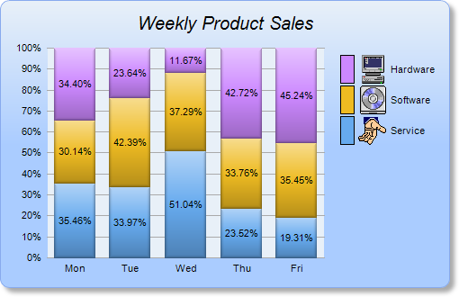

This example demonstrates creating a percentage bar chart with a legend box. It also demonstrates gradient background color, rounded frame, soft drop shadow, and using
CDML to include custom icons in the legend box.
A percentage bar chart is like a stacked bar chart, except the bars are individually scaled so that they stacked up to 100.
The key features demonstrated in this example are:
- The gradient background is achieved by using BaseChart.linearGradientColor to define the gradient color, then use BaseChart.setBackground to set it as the chart background color.
- The rounded frame is configured using BaseChart.setRoundedFrame.
- The soft drop shadow is configured using BaseChart.setDropShadow.
- The legend box is added using BaseChart.addLegend. The legend key (the color box to the right of each legend entry) is set to 16 x 32 pixels using LegendBox.setKeySize, so as to match the size of the custom icons.
- The ordering of the legend entries is reversed using Layer.setLegend, so that the legend box shows the last data set name first. This is useful for a vertical legend box in a vertical stacked chart with purely positive data. In such case, the last data set will be on the top of the stacked bars. Reversing the ordering of the legend entries will make it visually consistent with the stacking order of the data set.
- The percentage bar layer is added using XYChart.addBarLayer2 with the Percentage predefined constant.
- Multiple data sets are added to the bar layer using Layer.addDataSet. CDML is used to include custom icons in the data set names.
- Labels for the bar segments are added using Layer.setDataLabelStyle, with center alignment configured using TextBox.setAlignment.
Note that by default, the data label format is
{percent}% (showing the percentage) for a percentage bar layer, as opposed to
{value} (showing the data value) for other types of bar layer. The data label format can be modified using
Layer.setDataLabelFormat.
The following is the command line version of the code in "cppdemo/percentbar". The MFC version of the code is in "mfcdemo/mfcdemo". The Qt Widgets version of the code is in "qtdemo/qtdemo". The QML/Qt Quick version of the code is in "qmldemo/qmldemo".
#include "chartdir.h"
int main(int argc, char *argv[])
{
// The data for the bar chart
double data0[] = {100, 125, 245, 147, 67};
const int data0_size = (int)(sizeof(data0)/sizeof(*data0));
double data1[] = {85, 156, 179, 211, 123};
const int data1_size = (int)(sizeof(data1)/sizeof(*data1));
double data2[] = {97, 87, 56, 267, 157};
const int data2_size = (int)(sizeof(data2)/sizeof(*data2));
// The labels for the bar chart
const char* labels[] = {"Mon", "Tue", "Wed", "Thu", "Fri"};
const int labels_size = (int)(sizeof(labels)/sizeof(*labels));
// Create a XYChart object of size 500 x 320 pixels. Use a vertical gradient color from pale
// blue (e8f0f8) to sky blue (aaccff) spanning half the chart height as background. Set border
// to blue (88aaee). Use rounded corners. Enable soft drop shadow.
XYChart* c = new XYChart(500, 320);
c->setBackground(c->linearGradientColor(0, 0, 0, c->getHeight() / 2, 0xe8f0f8, 0xaaccff),
0x88aaee);
c->setRoundedFrame();
c->setDropShadow();
// Add a title to the chart using 15 points Arial Italic. Set top/bottom margins to 15 pixels.
TextBox* title = c->addTitle("Weekly Product Sales", "Arial Italic", 15);
title->setMargin(0, 0, 15, 15);
// Tentatively set the plotarea to 50 pixels from the left edge, and to just under the title.
// Set the width to 60% of the chart width, and the height to 50 pixels from the bottom edge.
// Use pale blue (e8f0f8) background, transparent border, and grey (aaaaaa) grid lines.
c->setPlotArea(50, title->getHeight(), c->getWidth() * 6 / 10, c->getHeight() -
title->getHeight() - 50, 0xe8f0f8, -1, Chart::Transparent, 0xaaaaaa);
// Add a legend box where the top-right corner is anchored at 10 pixels from the right edge, and
// just under the title. Use vertical layout and 8 points Arial font.
LegendBox* legendBox = c->addLegend(c->getWidth() - 10, title->getHeight(), true, "Arial", 8);
legendBox->setAlignment(Chart::TopRight);
// Set the legend box background and border to transparent
legendBox->setBackground(Chart::Transparent, Chart::Transparent);
// Set the legend box icon size to 16 x 32 pixels to match with custom icon size
legendBox->setKeySize(16, 32);
// Set axes to transparent
c->xAxis()->setColors(Chart::Transparent);
c->yAxis()->setColors(Chart::Transparent);
// Set the labels on the x axis
c->xAxis()->setLabels(StringArray(labels, labels_size));
// Add a percentage bar layer
BarLayer* layer = c->addBarLayer(Chart::Percentage);
// Add the three data sets to the bar layer, using icons images with labels as data set names
layer->addDataSet(DoubleArray(data0, data0_size), 0x66aaee,
"<*block,valign=absmiddle*><*img=service.png*> Service<*/*>");
layer->addDataSet(DoubleArray(data1, data1_size), 0xeebb22,
"<*block,valign=absmiddle*><*img=software.png*> Software<*/*>");
layer->addDataSet(DoubleArray(data2, data2_size), 0xcc88ff,
"<*block,valign=absmiddle*><*img=computer.png*> Hardware<*/*>");
// Use soft lighting effect with light direction from top
layer->setBorderColor(Chart::Transparent, Chart::softLighting(Chart::Top));
// Enable data label at the middle of the the bar
layer->setDataLabelStyle()->setAlignment(Chart::Center);
// For a vertical stacked chart with positive data only, the last data set is always on top.
// However, in a vertical legend box, the last data set is at the bottom. This can be reversed
// by using the setLegend method.
layer->setLegend(Chart::ReverseLegend);
// Adjust the plot area size, such that the bounding box (inclusive of axes) is 15 pixels from
// the left edge, just below the title, 10 pixels to the right of the legend box, and 15 pixels
// from the bottom edge.
c->packPlotArea(15, title->getHeight(), c->layoutLegend()->getLeftX() - 10, c->getHeight() - 15)
;
// Output the chart
c->makeChart("percentbar.png");
//free up resources
delete c;
return 0;
}
© 2023 Advanced Software Engineering Limited. All rights reserved.